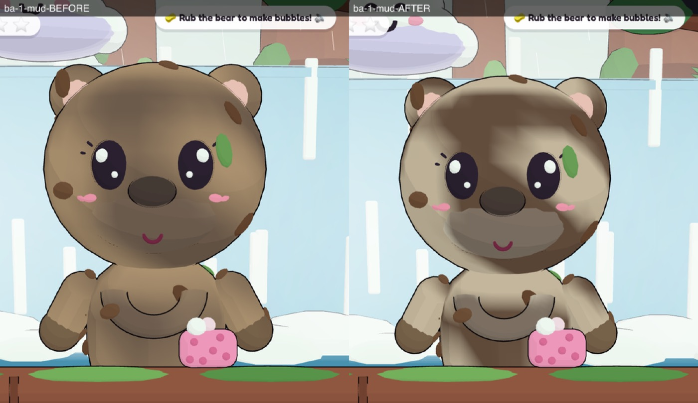
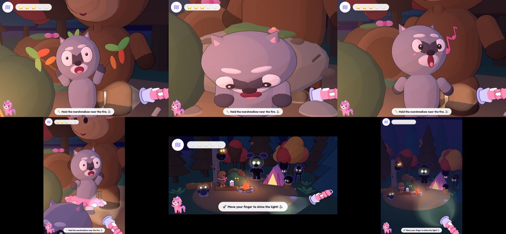
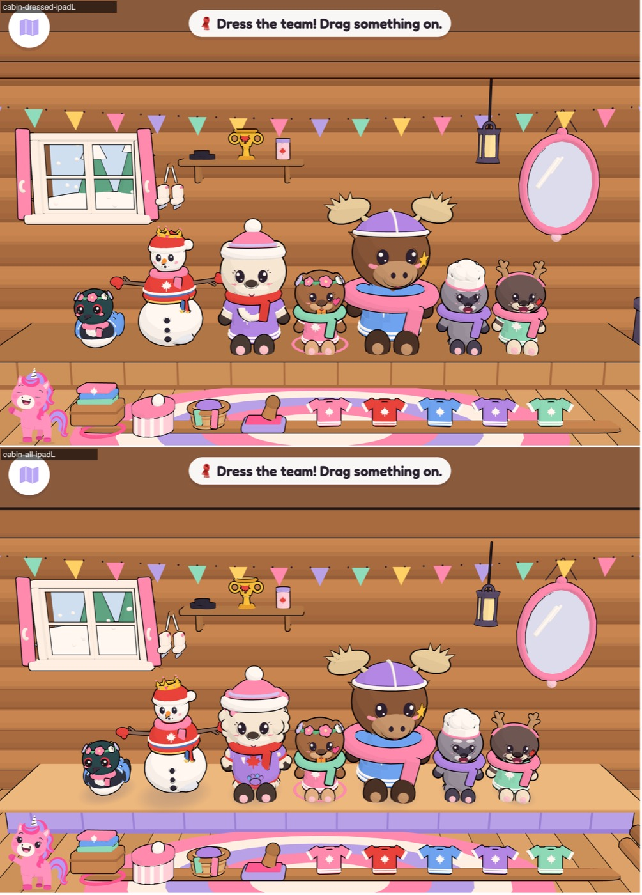

Check-in ship
Canada, round two: three chapters rebuilt, and a cabin to dress the team
She gives a muddy bear a bubble bath and a new look, plays flashlight statues with a sneaky raccoon, plays peek-a-boo with whales, and dresses the whole hockey team. What she makes goes to the big game.
Watch Campfire · 155 s Canada bath · 92 s Canada cabin · 98 s Canada hockey moves · 103 s Canada map moves · 100 s Whales · 162 s Before and after 
Misty, muddy : After the fresh-eyes pass (right) she reads as a white bear covered in mud, not a brown bear
The whale is the toy : The whales come up bigger, broadside and nearer the boat, with separate spots to tap

Roxy's statues : I'm a tree. I'm a rock. Nobody here! Just stretching!
The Team Cabin : Before (top) the friends seemed to stand at the wall; now they sit on a benchHear the script
Listen Misty's Bubble Bath
0:00–0:03 Sponge scrubbing suds (loop)0:03–0:04 A sponge squeak0:04–0:05 Bubbles popping0:06–0:09 Little rain cloud (loop)0:09–0:12 Towel rubbing (loop)0:13–0:14 A comb through fur0:14–0:15 A berry bush squashed0:16–0:16 Berry juice dabbed on0:17–0:18 A wet bear shakes0:19–0:19 Paw print: THUMP0:20–0:21 Back scratched on a tree0:22–0:23 A banana slug stretches0:23–0:25 The pool glows like a mirror0:26–0:27 The sweater goes on0:27–0:28 A decoration pops on0:28–0:29 The soap slips outFlashlight Statues
0:00–0:01 Little giggles in the dark (a kit hiding)0:01–0:02 The flashlight's switch0:02–0:03 Freeze! (caught in the beam)0:04–0:05 A statue wobbling0:05–0:06 Falling over in the leaves0:07–0:07 Yoink! (a marshmallow grabbed)0:08–0:09 A porcupine puffs his quills0:10–0:10 A deer stops mid-chew0:11–0:12 A little bat squeaks (and yawns)0:13–0:13 Monty's sunglasses go on0:14–0:18 The northern lights shimmerWhale Peek-a-Boo
0:00–0:01 Bubbles come up where a whale will peek out0:02–0:02 One bubble pops at the surface0:03–0:04 A whale pops up: peek-a-boo!0:05–0:06 Spray rains down on the little boat0:07–0:08 The grey whale rolls over in the water0:09–0:10 The whale laughs bubbles0:11–0:12 A tail slaps the water0:12–0:15 Held down: the humpback sinks in a rush of bubbles (loop)0:16–0:17 A whale rushes up out of the water0:18–0:19 The jump's wave washes over the boat0:20–0:21 A little splash0:21–0:22 The baby orca giggles0:23–0:24 The rock tossed up into the airThe Team Cabin
0:00–0:00 A thing flies onto a friend0:01–0:01 It lands on and is worn0:02–0:03 A cheek stamp pressed on0:03–0:04 Dropped in a silly place0:05–0:06 A friend giggles0:06–0:08 The mirror takes the team photo0:08–0:09 The window swings open for Gus0:10–0:10 A bin on the shelf opens0:11–0:12 The stove poked0:13–0:13 The skates on their pegs knock together0:14–0:20 The hut (bed)The map: moves, the hut, Gus
0:00–0:00 Tuque tosses a puck up0:01–0:01 A puck boings off Tuque's snowy tummy0:02–0:03 The puck clacks down on the ice0:04–0:04 Monty freezes like a statue0:05–0:06 Two geese flap in and land on Monty's antlers0:07–0:07 Roxy leaps over the boards0:08–0:09 Roxy whisks the puck0:09–0:10 Misty's slap shot0:11–0:12 The pinecone lands on the ice0:12–0:13 Ollie's rock lands in a paw0:14–0:14 Ollie spins like a top0:15–0:15 The rock is passed0:16–0:17 The skate hut's door opens0:18–0:18 Gus gulps (a whole team!)Your call Roxy frozen as a tree in the flashlight (the campfire reel): funny enough, or sillier?
Monty's move at the rink changed from the plan: two geese take him for a statue and perch on his antlers. Keep it, or geese wobbling past him?
The Team Cabin came in this same PR instead of a second one. Keep it in, or hold it back?
Copy my answers Open the PR to paste them
Play it yourself (optional) Misty's Bubble Bath Flashlight Statues Whale Peek-a-Boo The Team Cabin, whole team The map: Misty comes home Feel lab: the bath Feel lab: the flashlight Feel lab: the humpback's jump